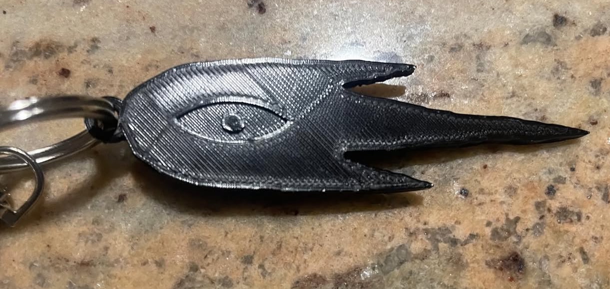

Something Keychain (From Omori)

Model Description
In 2023 I finally got the chance to experience the video game Omori for the first time. I was blown away by the depth of its story.
Since I really liked the game and wanted to practice my 3D modeling skills, I decided to make a keychain of the creature called 'Something' that haunts Sunny when he's awake.

This project was made primarily using extrusions.
3D Printer Settings
Here were my 3D printer settings:3D printer: Creality Ender 3 Pro
Slicer: Ultimaker Cura
Filament type: PLA
Layer Height: .2mm
Wall/Top/Bottom Thickness: .8mm
Infill: 20%
Printing Temp: 200 degrees C
Base Plate Temp: 60 degrees C
Download Project